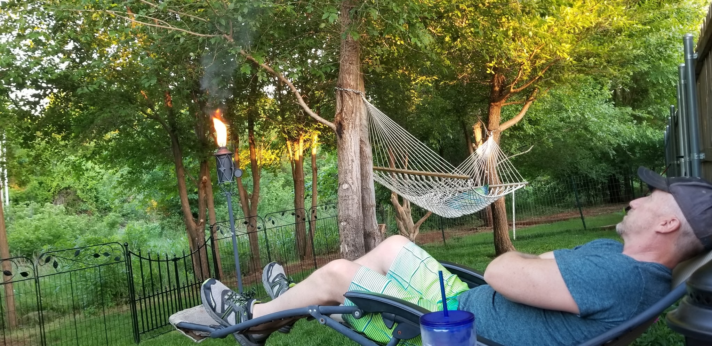
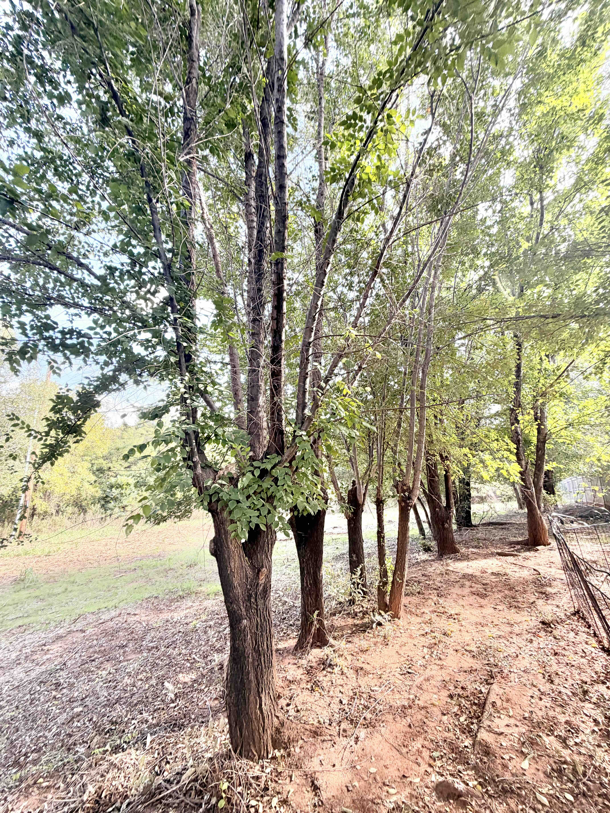

Serra Woodland Edge Condition
and Restoration Report
Prepared for:
Laura Serra
340 Kristy Dr
Edmond, OK 73003
Prepared by:
Christian Castillo
Abundant Life Land & Tree LLC
Field inspections:
October 26 and 29, 2026
Report issued: November 4, 2026
Prepared for presentation to the
Homeowners Association
Executive Summary
This report documents physical
disturbance to a wooded area
adjoining the residence of
Laura Serra at 340 Kristy Drive,
Edmond, Oklahoma.
Site inspections conducted on
October 26 and 29, 2026,
identified extensive surface
disturbance, tracked-equipment
impressions, displaced soil,
altered vegetation cover,
and declining crown conditions
in approximately twelve
surviving elm trees.
The affected elms are
approximately 7–10 inches
in diameter at breast height
(DBH), based on field estimates.
Field observations included
widespread cracking of
clay-rich surface soil,
machinery ruts approximately
3–4 inches deep,
and apparent fill material
covering root flares
near the disturbed area.
Previously established
herbaceous vegetation,
reportedly reaching
approximately 3–4 feet
in height, has been removed
from portions of the
disturbed woodland.
A dated photograph from
May 25, 2018, documents
substantial multilayered
woodland screening behind
the residence.
Current conditions raise
concerns regarding soil
degradation, reduced
root-zone moisture retention,
altered environmental
exposure, and long-term
tree vitality.
The recommended HOA response
is to protect surviving trees,
support corrective deadwood
pruning, restore the disturbed
root zones, and establish
a long-term woodland buffer
restoration program.
1. Requested HOA Action
The HOA should review the
documented disturbance and
coordinate a comprehensive
response to protect surviving
trees and restore the
residential woodland edge.
Prevent additional
mechanical disturbance.
Restrict heavy machinery,
grading, soil dumping,
and material storage
within the affected
woodland root zones.
Support corrective
pruning of approximately
twelve affected elms.
Remove confirmed dead
branches where appropriate,
preserving living foliage
needed for recovery.
Fund restorative
organic-matter installation.
Protect exposed root zones
with properly applied
coarse arborist wood chips
and appropriate surface
vegetation.
Address potentially
buried root flares.
Verify the composition
and depth of deposited
material before undertaking
careful corrective work.
Reestablish woodland
screening and understory.
Develop native plantings
that address privacy,
security, ecological
function, erosion,
runoff, noise buffering,
and nighttime light
intrusion.
Establish long-term
recovery monitoring.
Support ongoing inspections
and establishment care
through multiple
growing seasons.
2. Inspection Methods and Scope
Christian Castillo of Abundant
Life Land & Tree LLC
conducted site inspections
on October 26 and 29, 2026.
Areas personally inspected
included the rear residential
yard, fence line, disturbed
machinery corridor, and
accessible remaining
woodland interior.
Inspection methods consisted
of visual examination,
photographic documentation,
manual probing of the
soil surface, assessment
of apparent moisture and
resistance to penetration,
and comparison with
less-disturbed areas.
Conditions were sunny,
with relatively low
soil moisture.
The affected site was
accessible on foot.
The inspection did not
include laboratory soil
analysis, bulk-density
testing, calibrated
penetrometer readings,
invasive root investigation,
or advanced internal
tree examination.
Measurements reported
below are field estimates
unless explicitly stated
otherwise.
3. Reported Disturbance History
Woodland clearing reportedly
occurred earlier in 2026.
The exact beginning and
completion dates have
not been verified.
According to information
provided by the resident,
the work proceeded following
an indication of approval
from the HOA president.
The broader HOA membership
reportedly was not consulted
or asked to vote before
the clearing occurred.
This report does not
independently establish
the scope of that approval,
whether written authorization
was issued, or whether
applicable HOA governance
procedures were followed.
The resident reports
deterioration in the
condition of nearby
elm trees following
the disturbance.
The chronology is
consistent with a potential
relationship between
site disturbance and
subsequent tree stress.
It does not, by itself,
establish exclusive
causation.
4. Historical Woodland
Condition and Screening

Figure 1 — Historical
Woodland Condition.
May 25, 2018.
The image depicts a
multilayered wooded buffer
behind the residential
fence, including mature
trees, smaller woody
vegetation, and ground cover.
The historical photograph
was taken from approximately
the same portion of the
residential backyard
represented in the
current documentation.
It establishes that a
densely vegetated woodland
buffer was present
in May 2018.
The wooded setting
provided visual screening
beyond the backyard's
ornamental fence,
and formed part of an
established residential
recreational environment.
The photographed vegetation
likely contributed to
localized shading,
wind moderation,
interception of rainfall,
and habitat diversity.
These functions were
not quantitatively measured.
The photograph establishes
historic conditions,
rather than the precise
number and species
of plants present
immediately before
the 2026 clearing.
5. Recorded Field Findings
5.1 Machinery Traffic
and Soil Disturbance
Track impressions
approximately 3–4 inches
deep were observed
through portions of
the disturbed woodland.
Soil displacement,
surface deformation,
and areas of exposed
clay were documented.
Manual probing and
comparison with
less-disturbed soil
suggested increased
resistance to penetration
in disturbed areas.
These findings are
consistent with mechanical
disturbance and possible
compaction.
The degree and depth
of subsurface compaction
have not been quantified.
Recommendation:
Prevent additional equipment
traffic and implement
surface rehabilitation.
No generalized mechanical
cultivation or aggressive
soil excavation is
recommended at this stage.
5.2 Loss of Surface
Vegetation and Organic Cover
The resident describes
previously established
wild grass and herbaceous
vegetation reaching
approximately 3–4 feet
in height.
The current disturbed
areas exhibit widespread
exposed clay and
limited organic cover.
Remnants of forestry
mulching were observed
in localized piles,
rather than distributed
across the exposed soil.
The reduction in
surface vegetation
and organic cover
may increase direct
solar exposure,
evaporation, surface
temperatures, runoff,
and erosion.
Widespread surface
cracking was observed.
Such cracking can
result from drying
and shrinkage of
clay-rich soil and
does not independently
establish compaction.
Recommendation:
Restore organic surface
protection using coarse
arborist wood chips
and suitable vegetation.
Avoid burial of
trunk bases and
excessive mulch depth.
5.3 Deposited Material
and Buried Root Flares
In portions of the
disturbed site,
soil material had been
deposited near existing
tree bases.
Some root flares
appeared buried
beneath displaced
clay and a pale
powder-like material.
The pale material
visually resembled
concrete powder,
but its composition
has not been verified.
If cementitious
or strongly alkaline
material is present,
it may warrant
specific investigation
before restoration.
Burial of root flares
and elevation of soil
grade may interfere
with favorable
root-zone conditions.
Recommendation:
Document the location
and depth of fill,
determine the identity
of the unknown material,
and carefully expose
affected root flares
to an appropriate
original grade.
Avoid injuring bark
and structural roots.
5.4 Elm Crown Decline
Approximately twelve
surviving elms,
estimated at 7–10 inches
DBH, exhibited varying
degrees of crown decline.
Observations included
branch dieback,
irregular crown density,
minimal yellowing,
and limited premature
leaf drop.
No pronounced wilting
or conspicuous insect
activity was observed
during the inspections.
The resident describes
a gradual onset
of decline.
The pattern is compatible
with physiological stress
associated with unfavorable
growing conditions.
Soil disturbance and
reduced moisture
retention may have
compounded heat and
moisture stress
during the summer.
Other causes, including
vascular disease,
remain possible.
The absence of marked
wilting during inspection
and the reportedly gradual
onset do not rule out
Dutch elm disease.
Species identification,
the proportion of
dead crown, and
disease status
have not been
definitively established.
Recommendation:
Retain and monitor
the living elm population
unless individual
structural assessments
warrant removal.
Prioritize root-zone
improvement and removal
of confirmed deadwood.
Pursue diagnostic sampling
if characteristic
vascular symptoms
or progressive
flagging develop.
5.5 Mechanical
Branch Injuries
The photographic record
includes trees exhibiting
fractured branch
attachments, exposed wood,
irregular cuts,
and torn woody tissue.
Such injuries can
affect local structural
condition and create
sites susceptible
to future wood decay.
The exact date
and cause of each
photographed wound
have not been verified.
Recommendation:
Examine significant
wounds individually.
Remove hazardous
broken material
and make appropriate
corrective pruning cuts
where beneficial.
Avoid enlarging trunk
wounds unnecessarily
or removing healthy
foliage without
a clear purpose.
5.6 Residential
Woodland Buffer Loss
Clearing extends
to the vicinity
of Laura Serra's
property boundary.
The resident has
expressed concern
that the disturbance
may extend across
the property line.
A boundary survey
has not been conducted.
Encroachment onto
private property
is therefore
not established
by this report.
The changes in
vegetation have
reduced the apparent
density and continuity
of the historic
woodland buffer.
The resident identifies
diminished privacy,
security, noise buffering,
and increased intrusion
of nearby street lighting
as significant concerns.
Runoff, erosion control,
and long-term ecological
recovery are additional
restoration objectives.
Recommendation:
Restore a layered
native woodland-edge
planting scheme
that addresses both
ecological function
and residential screening.
Confirm planting limits
and site permissions
before installation.
6. Initial Remediation
Already Performed
Abundant Life Land &
Tree LLC has completed
an initial organic
surface restoration
intervention near
the rear residential
boundary.
Approximately 3 cubic yards
of coarse, natural,
locally sourced arborist
wood chips were installed
beneath the affected
elm grouping.
The material was applied
at approximately
3 inches in depth.
The purpose was
to provide immediate
surface protection,
moderate soil temperature,
reduce evaporative losses,
and create favorable
conditions for gradual
improvement of the
organic surface layer.
The out-of-pocket
cost of this completed
intervention was
$360.00.
Accounting distinction:
This amount represents
completed work and
is included separately
in the restoration
budget below.
Any reimbursement or
payment obligation
should be confirmed
before final invoicing.
7. Contemporary Photographic Evidence
Photographs provided from
the October 2026 site review.
The precise capture date
of each photograph
has not been separately verified.

Figure 2 — Elm Crown Condition.
Multiple stems with
apparent crown thinning
and bare branches.
Establish appropriate
root-zone exclusion
areas and suspend
unnecessary mechanical
activity in the
affected woodland.
Avoid additional
soil dumping,
grading, excavation,
and equipment storage
near retained trees.
Phase II — Corrective
Elm Pruning
Conduct selective deadwood
pruning of approximately
twelve affected elms,
subject to individual
inspection and confirmation
of dead branch condition.
Tree size is estimated
at 7–10 inches DBH.
Access does not
reasonably accommodate
an aerial lift.
Work should be carried
out by a small,
appropriately equipped
crew using manual
access methods,
ladders where suitable,
and climbing techniques.
Pruning should emphasize
removal of confirmed
dead material without
unnecessary live-crown
reduction.
Applicable ANSI A300
pruning practices
and ANSI Z133
safety requirements
should be followed.
Phase III — Soil
Surface Rehabilitation
Expand the initial
coarse wood-chip
restoration across
appropriate disturbed
portions of the
woodland and
retained root zones.
Approximately 25 cubic
yards of organic material
are provisionally
anticipated in total,
including the
3 cubic yards
already installed.
Maintain approximately
3 inches of mulch
where appropriate,
without burying
trunks or root flares.
The final installation
area should be measured
before authorization.
Distribute materials
using wheelbarrows
and manual labor
to avoid further
soil compaction.
At present,
widespread mechanical
decompaction is not
recommended.
Phase IV — Woodland
Planting and Screening
Reestablish a
native woodland-edge
vegetation layer
using a combination
of understory trees,
shrubs, and suitable
ground vegetation.
The provisional
planting scope includes
ten or more saplings,
supplemented by
appropriate native
grasses, forbs,
and shrubs.
Plant selection should
reflect available
sunlight, soil moisture,
mature plant size,
drainage, and proximity
to existing tree roots.
Appropriate native
candidates should
be selected from
species suited to
central Oklahoma
woodland-edge conditions.
Species and quantities
should be finalized
after evaluating
the actual planting
locations and
screening objectives.
Restore multiple
vegetation layers,
rather than relying
solely on a row
of replacement trees.
Phase V — Establishment
and Monitoring
Newly installed
vegetation should
receive supplemental
watering sufficient
to support establishment,
adjusted to rainfall,
season, soil drainage,
and plant requirements.
Retained elms should
be monitored during
at least the next
two growing seasons,
with additional follow-up
where decline persists.
Document crown condition,
new dieback,
wound progression,
and the establishment
of replacement vegetation.
The HOA should
consider funding
continuing care,
replacement of failed
plantings, and monitoring
as part of the
overall restoration
program.
9. Preliminary HOA Restoration Budget
The following schedule
reflects preliminary
contractor pricing
based on anticipated
quantities and access.
Final costs depend
on confirmation
of work quantities,
planting design,
and project scope.
Additional organic
mulch installation:
22 cubic yards
at $120 per yard
$2,640
3
Corrective deadwood
pruning:
estimated 8 hours
for a two-person crew
at $135 per hour
$1,080
4
Native woodland-edge
planting:
ten or more saplings,
shrubs, and/or
native seeding
TBD
5
Planting installation
and establishment:
priced at 2.3 times
approved plant
and material cost
TBD
6
Follow-up tree
inspections,
establishment
watering, and
replacement provisions
TBD
PRICED PLANNING SUBTOTAL
$4,080
Preliminary quantified
restoration allowance
$4,080.00
Plus planting,
establishment,
and monitoring
costs to be determined
The mulch allowance assumes
25 cubic yards total,
including the three
cubic yards already placed.
If 25 additional cubic yards
are required, the budget
must be adjusted accordingly.
At approximately 3 inches
of application depth,
25 cubic yards would cover
roughly 2,700 square feet,
before adjustments for
site geometry and exclusions.
The area has not been measured.
An eight-hour pruning day
is an estimate, not a
confirmed fixed scope.
Work exceeding the allowance
requires approval.
Plant material and
establishment services
should not be duplicated
in final invoicing.
A defined planting schedule
will establish the applicable
material-cost basis
and final installation price.
Budget status:
This is a preliminary
restoration allowance,
not a complete fixed-price
contract.
HOA funding approval
should include the
specified initial work
and development of a
complete planting and
recovery budget.
10. Significance
of the Disturbance
10.1 Tree Health
and Root-Zone Function
The observed physical
disturbance, loss of
organic surface cover,
possible compaction,
and apparent root-flare
burial present concerns
for surviving trees.
These changes may
reduce favorable
moisture, aeration,
and soil temperature
conditions.
Such conditions
could contribute
to decline, particularly
during periods
of high heat
and low soil moisture.
10.2 Residential
Privacy and Amenity
The historical photograph
demonstrates that
an established woodland
buffer previously
bordered the residence.
The resident reports
reduced visual privacy,
increased street-light
penetration, diminished
noise buffering,
and concerns
regarding security.
These concerns should
be addressed through
a vegetation plan
that restores meaningful
screening as plants mature.
10.3 Runoff,
Erosion, and
Ecological Function
Loss of vegetation
and organic cover
can reduce surface
protection and
alter runoff behavior.
Surface restoration
and appropriately
established vegetation
can contribute to
improved ground
stabilization and
ecological recovery.
No hydrologic modeling
or quantitative erosion
assessment has
been completed.
11. Assessment Limitations
and Unresolved Questions
This report documents
the accessible site
conditions observed
during the October
inspections and
incorporates resident
statements and
historical photographs.
The following matters
remain unresolved:
Exact date and duration
of clearing activity.
Precise equipment
types and work methods.
Dimensions of the
disturbed woodland area.
Species, sizes,
and number of
trees or shrubs removed.
Exact extent of
subsurface root injury
and soil compaction.
Composition of the
pale deposited material
observed near root flares.
Extent of any
disturbance beyond
the residential
property line.
Specific diagnosis
of elm crown decline,
including possible
vascular disease.
Total planting and
long-term establishment
costs.
The species composition
and quantity of vegetation
removed from the woodland
are particularly uncertain.
No formal pre-disturbance
tree inventory
is available.
The historical photograph
documents conditions
in May 2018,
but does not establish
the exact vegetation
present immediately
before the 2026 clearing.
The observed crown decline
may have multiple
contributing causes.
This report does not
establish a definitive
causal diagnosis.
No formal quantified
tree-risk assessment,
legal determination,
boundary survey,
environmental testing,
or monetary appraisal
of removed vegetation
is included.
The recommendations
reflect professional
judgment based on
currently available
information and
may require adjustment
as additional evidence
becomes available.
12. Recommended
HOA Resolution
Based on the documented
mechanical disturbance,
altered soil conditions,
apparent tree injuries,
and reduction in
woodland screening,
the following actions
are recommended
for HOA consideration.
Establish protective
restrictions on additional
machinery activity
in the affected woodland.
Approve corrective
deadwood pruning
and root-zone
surface restoration
for the surviving
elm population.
Review and fund
the preliminary
$4,080 restoration
allowance, subject
to final verification
of quantities
and completed-work
accounting.
Commission a
woodland-edge
planting plan
that restores
residential privacy
and ecological function.
Establish a separate
planting and long-term
establishment budget
following approval
of the vegetation plan.
Provide continuing
oversight and monitoring
during the recovery
of surviving trees
and establishment
of replacement vegetation.
This approach addresses
both the immediate
physical condition
of retained trees
and the broader need
to restore the woodland
buffer adjoining
the Serra residence.
13. Professional Conclusion
The October 2026
inspections documented
substantial surface
disturbance within
woodland adjoining
Laura Serra's residence.
Observable conditions
include machinery ruts,
displaced clay soil,
diminished organic
ground cover,
apparent root-flare
burial, and injuries
to retained trees.
Approximately twelve
elms display varying
degrees of crown
decline and branch
dieback.
The documented
disturbance provides
a plausible contributing
explanation for
physiological stress,
particularly when
considered alongside
low soil moisture
and summer heat.
The precise cause
and degree of
decline remain
undetermined.
Historical photographic
evidence establishes
that a substantial
woodland buffer
existed along
the residential edge
in May 2018.
The current reduced
vegetation cover
presents a separate
restoration concern
beyond the health
of individual trees.
A coordinated program
of tree protection,
conservative corrective
pruning, organic
root-zone restoration,
native vegetation
reestablishment,
and ongoing monitoring
is recommended.
The objective should
be to preserve
the surviving elm
population wherever
reasonably practicable
while progressively
restoring the screening,
soil protection,
and ecological character
of the woodland edge.
14. Technical References
Oklahoma State University
Extension — Site Disturbance
and Tree Decline.
View publication
Oklahoma State University
Extension — All You Need
to Know About Mulch.
View publication
Oklahoma State University
Extension — Planting Trees
and Shrubs.
View publication
Oklahoma State University
Extension — Dutch Elm Disease.
View publication
Oklahoma State University
Extension — Plant-It OK
plant selection resource.
View resource